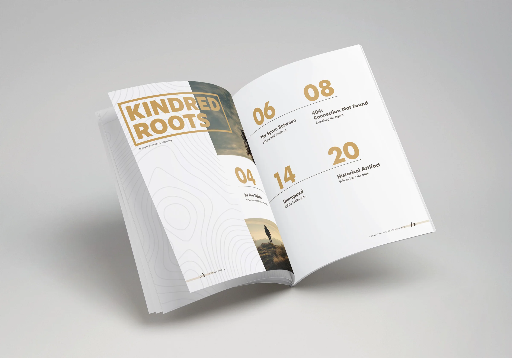
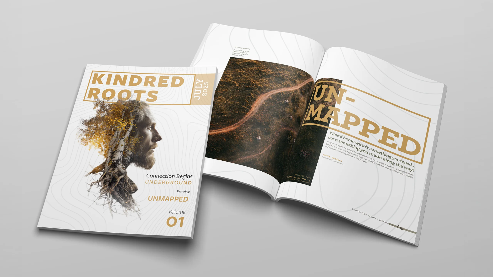
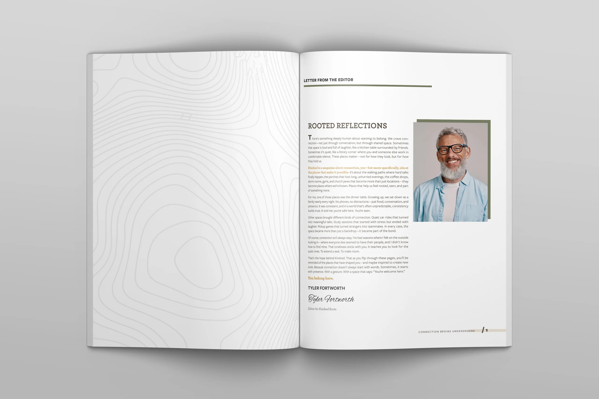
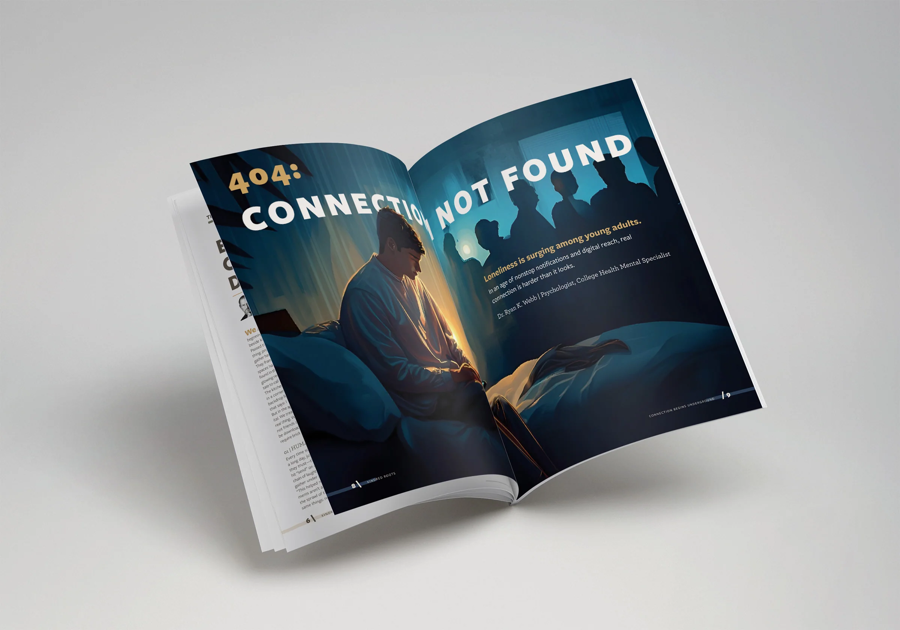
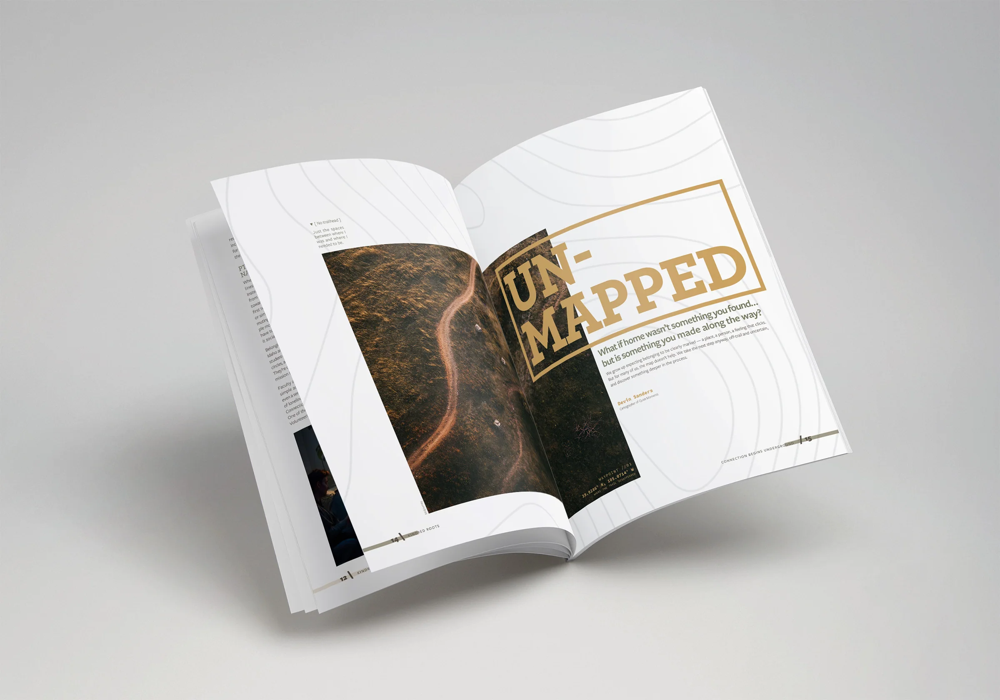
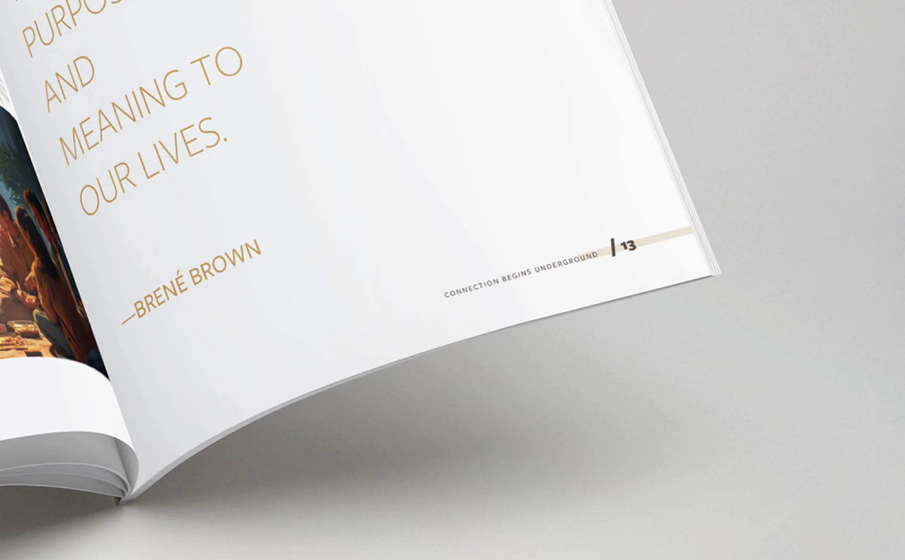
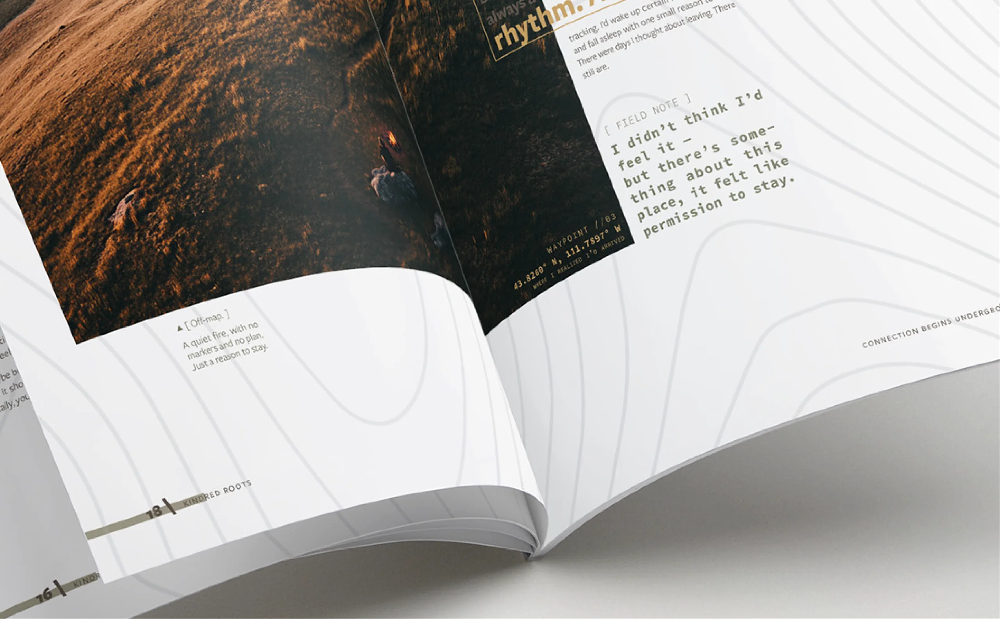
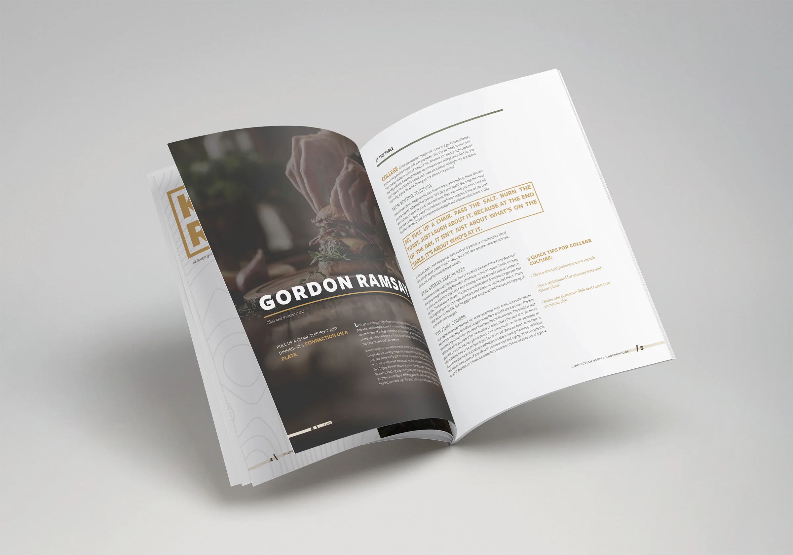
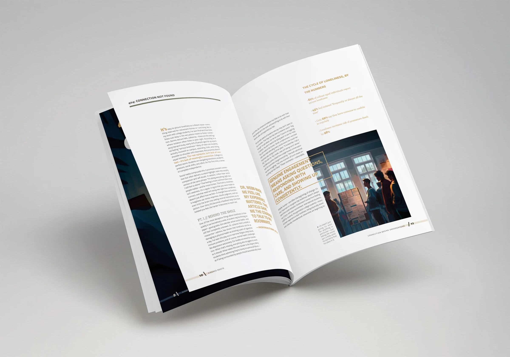
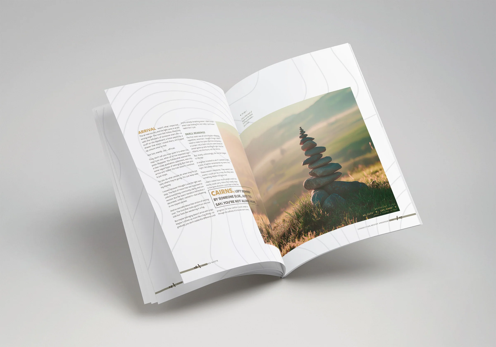

01Contents
Wide margins and big numbers set the pace before the first story starts.

Magazine layout · Typography · Publication design
Kindred Roots, issue 01: a magazine about community and belonging.
A slower alternative to the screen: something you sit down with.
Big display type next to calm, roomy reading spreads.
Warm, earthy colours, so each story gets its own mood and still feels like the same magazine.

Wide margins and big numbers set the pace before the first story starts.

A quieter spread, mostly text, to slow the reader down.

Error-message type, dark colour and uneven columns, for a story about losing touch online.

Big aerial landscapes, heavy title bars and contour lines, for a story about being alone outdoors.
Two features: one about losing touch online, one about being alone outdoors.






Interface concepts